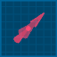
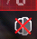
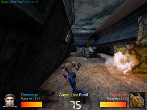

|
Alright
then prisoner. Now that you know how to get into a match of
Jailbreak we'll walk you through all of the in-game
elements, beginning with the heads-up display, or HUD for
short.
|
Stance
Bar
The
top part of the Jailbreak HUD is the stance bar. It
controls the aggressiveness of the bots. The higher
the stance bar is the more aggressive the bots on your
team are. If the stance setting is higher your bots
will attack the enemy base and try to free your team.
On the other hand, if the stance setting is low your
bots will defend your base. You can control the stance
setting using the keys assigned in the Jailbreak
Preferences dialog. |
|  |
Compass
The
compass can point toward one of two things: your
release mechanism or the enemy release mechanism. If
the color of the compass is red then it will point to
the red release mechanism and vice versa with blue.
You can change the compass' objective using the key
assigned in the Jailbreak
Preferences dialog. The compass can also be
changed visually by switching the user interface skin,
also available in the preferences dialog. Got cheese? |
|
Blue
Team Information
The
blue team information box contains the blue team's
current number of captures (or their score) as well as
a record of how many players out of the entire team
are in prison. In the example to the left the blue
team has no points and three of the five blue players are
in prison. |
|
Red
Team Information
The
red team information box contains the red team's
current number of captures (or their score) as well as
a record of how many players out of the entire team
are in prison. In the example to the left the red team
has no points and one of the five red players is in
prison. |
What
are the objectives in a game of Jailbreak? This section is
critical if you're new to combat in Jailbreak.
Defend
Your Release Switch
While
releasing your team and fragging your enemies are both
important, the most important part of Jailbreak could be defending
your release switch. The release switch in your base will
free all of the enemy prisoners you have captured, so if anyone form the
opposing
team gets to it and activates it, you'll have to frag all their
released teammates again, and of course there is a chance that they might
frag and capture you first.
The
objective of Jailbreak is to frag the entire enemy team
sending them to jail and score a point for your team. If
you have all but one their players in jail and the
last enemy player activates your release switch, all the
captured players on the other team will be released from jail, and you'll be back
where you started. That is why defending your release switch
is extremely important.
It
helps to have good teamwork and designate defensive positions to
certain players. A good defense can win a game of Jailbreak
sometimes, so make sure players are defending your
release switch while the rest of the team goes out to
capture the enemy. Otherwise it might be you getting sent up
the creek without a paddle!
Release
Your Team
You
can't win if your teammates are all in jail. (well you could
but it would be very hard!) An important aspect of Jailbreak is
releasing your teammates from the enemy jail.
Sure, the point of the mod is to frag the other team and
defend your release switch, but you still have to free your
mates from jail, right?
Releasing
your team can require planning and good team communication. If you just barge
into the enemy's base you'll most likely be fragged and sent
to prison. Some
bases have back ways in, so you might want to try using
those. And like a good team oriented mod, it's usually smart to take a band of teammates with
you when you set out to release your team, as the enemy will
usually be guarding their release switch. Don't
wait to long to attempt to spring your teammates from
prison. You may find yourself the last player on your team
and that's a kind of solitary you don't want to try too
often.
Release switches
come in all sizes, shapes and colors (though they are often
the same color as your team, but not always!). Don't forget
to use the release locator arrow to help you find the
release switch since some aren't as obvious as others.
Frag
(and capture) the Other Team
I
think you already know how to frag, don't you prisoner? If
you missed that meeting, it's pretty simple. Frag all the
enemy players and send them to jail. When this
happens your team will score a point. Got it? Good!
Fight
for Freedom in the Arena
Sometimes
even a prisoner like you gets lucky. You already know how to
frag, so this one is pretty easy too. On occasion while
imprisoned you may be sent to and arena along with an enemy
prisoner to fight for your freedom. When you are sent to
the arena with an enemy, frag them! Got it? Good! Arena matches tend to go
fairly quickly, so be prepared. If you succeed in defeating
your opponent you'll be freed from prison and respawned back into the map. If you
get fragged then it's back to jail with your loser
behind.
Every
arena is different and they are usually small. Take in your surroundings quickly,
grab a weapon if there are any, then go frag the enemy.
|
Statistics
tracking is a new feature in Jailbreak III. If you have set your Jailbreak Stats Password in the Jailbreak Preferences dialog,
the server will keep a record of your frags when you play online,
deaths, team releases, and many more unique stats during
each game.
In addition, your stats will be sent to a central
Jailbreak World Stats server. You can view your world stats record either on the Jailbreak World Stats website together with the stats of many other players or via the Show Stats button in the Player tab of the Jailbreak Preferences dialog.
| |
|
Scoring
is the only way to win in this game prisoner so make sure you
know how the scoring works before heading out into battle.
The scoring criteria is as follows.
-
One
point for every player you frag (a bonus point is
awarded if you frag an enemy while defending your own
release mechanism)
-
One
point for each time your team captures the other team
-
One
point per released prisoner when you release your team
-
Five
points for each llama you frag (see the Llama
Hunt section below for more information)
As
a team, you score one team point for every time the enemy
team is captured.
The
scoreboard is another key part of each Jailbreak match. It will let you know where the players on your team
are, how many points each of them have, how many players on
the opposing team are in jail, as well as many more
statistics on the current game. Following are some key parts
of the scoreboard.
|
The
scoreboard has a separate section for each player in
the current match. Below is the stats for one player
in a game of Jailbreak.
-
A
picture of the face of the model that the player
is currently using is shown in spot 1, or an icon telling you whether this player is in jail or in the arena.
-
The
player's name is shown is spot 2.
-
Spot
3 shows your current ranking on
this game server if you have your Jailbreak Stats Password
set in the Jailbreak Preferences
dialog. The small colored vertical bar next to it shows your
ping in network games; small and green means you have a good/low
ping, a big and red bar means your ping is bad/high.
-
The
part of the map that the player is currently
standing in as well as their current orders (if
they're a bot) are shown in spot 4.
(The enemy's position and orders are shown as
undisclosed; the example below applies only if
you're on the blue team.)
-
The
current number of points that the player has is
show in spot 5.
(Click
on the image above for a view of the entire scoreboard
as it would appear in an actual game.) |
|
The
text at the bottom of the scoreboard screen shows
relevant information to the current match. Overall, it
tells you the following:
-
The
skill level of the bots (Skilled)
-
The
name of the map (Hydro Forever)
-
The
number of captures needed to win (5)
-
The
time limit (10:00)
-
The
capture timeout (5:00)
-
The
amount of time remaining in the match (4:33)
-
The
amount of time left until all players are
respawned (4:33)
|
With
this version of Jailbreak you can no longer translocate
wherever you want whenever you want. Now, translocatable
zones have been introduced. To put it simply, you may only
use your translocator while in one of these zones. If you're
not in one of these zones a small icon will be displayed in
the bottom right corner of your screen, underneath the HUD
(shown below). Also, if you fire your translocator and try
to alt-fire to translocate to where the disc landed a large
icon will pop up in the middle of your screen and eventually
fade out (show below). Many of the maps released with
Jailbreak make use of translocatable zones, but some
user-made maps may not. If a map contains no translocatable
zones you won't be able to use your translocator anywhere in
the map.
|
Small Icon |
Large Icon |
|
 |
|
In
Jailbreak you can make human ladders. These are most useful
in prison when trying to access an escape route. (Yes, some
prisons have secret escape routes!) How do you do it? You can jump on top of another
player (helps if they crouch/duck) to create a two-person ladder. Then the person you're standing on can
jump on top of another player (helps if they crouch/duck) to create a three-person ladder, and so
on. The main use is of a human ladder is to get to escape routes in jails, as mentioned
above. If the entrance to an escape route is too high to
jump into then you must simply get another player to stand
under the jail while you jump on top of them and crawl into
the escape route. Shhhh... be very quiet while escaping!
Jailbreak
has full bot support. They will know how to defend your base
as well as release your team. They also know how to battle
in the arena. In this version of Jailbreak custom models are
also fully supported.
A
cool feature in the Jailbreak bots is that you can adjust
their aggressiveness. If it's high, they will head straight
for the enemy's release switch to try and free your team. If
the indicator is somewhere in the middle, the bots will stay
closer to your base while fragging the other team. And
lastly, if the indicator is on a low setting (low
aggressiveness), the bots will stay near your release switch
and defend it.
You
can adjust the aggressiveness from right inside the HUD. The
default keys are: GrayPlus [+] to increase it, and GrayMinus [-] to decrease it.
However, these functions can be assigned different keys
inside the Jailbreak Preferences dialog.
Also,
something really cool about the bots in Jailbreak is that,
when they're in jail, they sleep! They lay down and the
whole bit. Don't fret though; when the release switch is hit
they wake up instantly and leave the jail.
Whenever
a player from either team dies for any reason in a
Jailbreak match they are sent to jail. The only ways out of prison are to be
released by a teammate, get out through an escape route (if
the map has one), fight for your freedom in the arena, or
wait until the capture timeout runs out. If one of your
teammates hits the enemy's release switch the doors of the
prison you're in will open for a set amount of time and you
can run out. Be hasty though, because if you take too long
the doors will shut and you'll be stuck again.
(Click
on the image for a larger view.)
If
the map contains an escape route then you can try to get
through it and free yourself. Some escape routes require you
to make human ladders to reach them. Some take away a lot of
your health. The escape routes usually contain obstacles but
they are all possible to get through. Also,
once the capture timeout runs out (the set amount of time in
which you must make a capture) all players from both teams
are restarted in the map and the match continues. You lose
all your weapons and pickups but keep your points. In
this version of Jailbreak you can now take part in hammer
fights in prison. Yes, you too can now splatter your
teammates all over the prison walls with your piston.
Players are respawned back into the
prison as soon as they're killed and once the prison doors
open everyone gets full health back. Also, if you're sent to
the arena you'll receive full health. Prisons
can be a variety of places, some of them being underwater,
some being cages, others just being ordinary rooms. Whatever
the case, try to avoid being killed and imprisoned at all
costs.
The
arena is a fairly important part of each map prisoner. When
you and at least one enemy player are in jail you have the opportunity
of being sent to battle in the arena. The Jailbreak
announcer will warn you just before your arena combat is to
begin. While in the arena your only objective is to frag the
enemy player. If you succeed
you will be respawned back into the map and the loser will
be sent back to jail. If you're killed, however, you will be
sent back to jail and the winner will be respawned into the
map. While
in the arena there is a time limit in which you must fight.
If the time limit is exceeded both combatants are sent back
to jail. Players in prison can
now watch the arena battle. You have the
option of doing this or just sitting in jail. The key that
toggles this option can be set in the Jailbreak
Preferences dialog. Check out the screenshot below for a
view of the
arena cam while in jail.

(Click
on the image for a larger view.)
Once
a whole team has been captured, they will be executed and the other
team gets a point. How the captured team is dealt with is different in almost every map.
In
some maps, the team is simply gibbed. However, in other
prison executions, the mapper may have included a custom death
scenes for your pleasure.
Like
in JB-Phasma for example, four prison sliths (monsters) are
released from cages in the jail, and they kill all the
players. In JB-DarkTowers the floor drops away and the prisoners
fall into a cavern where they are sucked through
a giant fan which... well you can guess the rest.
A
cool new feature in this version of Jailbreak is a
camera-like view of the team getting executed. Whenever an
entire team is captured the player who fragged/captured the last
person on the enemy team is shown taunting the captured
team while they are executed. A unique message is also
displayed in the bottom right hand corner of the screen
telling about what the player did. Your view is
automatically switched to this death camera whenever a team
is captured. Check out the image below for one example of a
capture screen.
(Click
on the image for a larger view.)
Release
protection is an extremely handy feature of UT-Jailbreak. It's a
server-side setting, but you can adjust it to your liking in
a bot match. If it's active it will protect newly released
prisoners with an invulnerable shield so that enemies who
camp right outside the prison can't kill you as soon as
you're released. When the shield is active you can hurt
opponents but they cannot hurt you. Below is a picture of
the release protection part of the Jailbreak
Preferences dialog and an explanation of what each
option does.
|
First of all, you must select an
option from the Release Protection box to activate
release protection.
If
you select Invincible, prisoners who have
just been released are protected with an invulnerable shield for a
certain time or until they pick up a weapon. If you select
Invincible/Llamaize, attackers who attempt to inflict
damage on protected players beyond a certain damage threshold
are llamaized in addition to
that, killed and respawned in their home base with default health,
armor and weapons and an on-screen message explaining to them
that jail camping is bad.
The
Time Limit specifies how many seconds the
release protection is active. Remember, prisoner, you
cannot hurt any opponent with the release protection
active.
The
Taking a Weapon option specifies how many
seconds the release protection remains active after a
prisoner picks up a weapon.
The
Using a Weapon checkbox will, when checked,
remove a player's release protection as soon as they
fire a weapon. If it's not checked then the time
settings will take effect. |
 |
A
player is considered a llama if they disconnect from a
multiplayer game while in prison and reconnect in an attempt
to cheat their way to freedom or if they try to kill a
protected player. If this happens, that
player will be designated a llama. Killing a llama scores
the llama killer five bonus points. If, after a designated amount
of time, a llama hasn't been killed, the llama simply
explodes. Llamas can't release their teammates from prison
or get chicks either. This
version of Jailbreak sports a brand new llama effect,
similar to being extremely drunk. :-) If you're a llama
you'll see. In addition, you llamas will have a colorful glow around
you to help other players hunt you down like the llama you
are.
Sudden
death overtime occurs when the time limit is up and both
teams are tied with the same number of captures. A text
message will be shown warning you that overtime has taken
effect. In overtime the capture timeout is disabled so if
you're in jail you're there until your team releases you.
The first team to score a capture in overtime automatically
wins the match.
While you're in the game, you can use the following console commands. (Some of them only work if you're logged in as an admin or playing a
bot match.)
|
mutate utjb up
mutate utjb down
|
Modify the aggressiveness of your team's bots. You can bind keys to these commands using the Controls tab in the Jailbreak Preferences dialog. |
|
mutate utjb compass
|
Toggles the direction the compass points to (either red or blue release switch) and the scoreboard sort order. You can bind a key to this command using the Controls tab in the Jailbreak Preferences dialog. |
|
mutate utjb arenaview
|
Toggles arena view mode when an arena fight is going on. You can bind a key to this command using the Controls tab in the Jailbreak Preferences dialog. |
|
mutate utjb restart
|
Admin/botmatch only. Frees all players and starts the next round of the game as if the capture time limit had been hit. |
|
mutate utjb llama <playername>
|
Admin/botmatch only. Makes the player whose name matches the given <playername> a llama. Use responsibly, commander, or your
prisoners will get mad at you. |
|
mutate supervisor
|
Admin/botmatch only. Toggles supervisor mode; that means that you'll see all players' locations in your scoreboard (not just your own team's), and that you can switch to every player's viewpoint by pressing F5. Useful for map debugging and for finding campers. |
|
mutate playerinfo
|
Admin/botmatch only. Writes information about players and bots in UnrealTournament.log. Use this command and save your UnrealTournament.log before reporting bugs to us; it provides valuable information that can help us fixing the bug you're reporting. |
Getting
Started  Back |
Next
Server Information
Back |
Next
Server Information


|

{kind=link}
{kind=link}
{kind=link}
{kind=link}